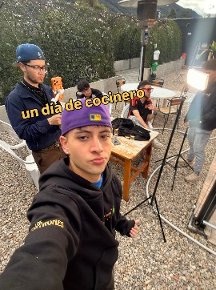

02 · Nosotros
Un pedacito de México
Un pedacito de México
en la sabana
Luces cálidas, mesas de madera, un luchador y Frida vigilando desde el mural, banderines de medio mundo colgando del techo. Gran Patrón no es un restaurante solemne: es la esquina de Cota donde la birria se come entre risas y la rumba llega sola.

0estilos de taco
0salsas de la casa
0tacos en la Taquiza
0%ambiente de patrón

— filosofía oficial de la casa
03 · Momentos
Lo que pasa en la taquería
…se publica en Instagram


Síguenos en Instagram
@granpatron_taqueria
04 · Picor
Las salsas de la casa
elige tu nivel de valentía
La Fantasma no perdona. Avisado quedas.
05 · Ubicación
Cómo llegar
Estamos en Cota, Cundinamarca — a un antojo de distancia de Bogotá. Patio al aire libre, sombrillas y estufas para las noches de sabana.
Horarios y eventos del fin de semana: @granpatron_taqueria
06 · Tu Pedido
Arma tu pedido
y mándalo directo por WhatsApp
Tu pedido está vacío. El menú está arriba, esperándote. 👆
Volver al menúTotal$0
Proteína, salsas y demás detalles los confirmas en el chat.